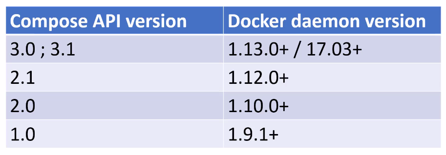
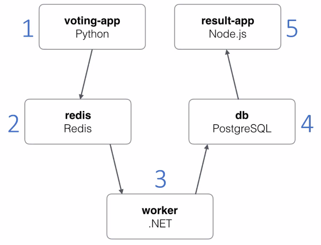

06 - Docker Compose Workshop
Adding docker compose support
Docker compose uses a *.yml file to define all containers settings (previously passed as arguments to the ‘docker’ CLI commands)
The docker compose file doesn’t have to be in the same directory as the dockerfile(s) but can reference them relatively to its own location (e.g. ./projectA)
Define docker compose API version
version: '3'
Define services (image + containers)
services:
redis
# redis properties here
web:
# web application properties here
services lists all available images
here ‘redis’ and ‘web’ will be the name of the image and the container
Inside the services:
image: 'redis:5.0-alpine'
image: 'nickjj/web:1.0' # from public docker hub
defines the docker image to be used (pulled down if not already existing)
build: '.'
defines the image is to be built (not pulled) -> location must point to the dockerfile location
the docker-compose.yml file does not have to be in the same directory as the docker file (but might be one level higher)
ports:
- '5000:5000'
defines ports to be opened for this service (multiple ports are possible)
list entries start with a ‘-‘ (ports excepts values in form of a list)
volumes:
- '.:/app'
defines a volume to be exposed (here the current directory ‘.’ is exposed in ‘/app’. Note that ‘.’ can be used instead of $PWD as in the docker CLI command, even on Windows)
volumes:
- 'redis:/data'
exposes a named volume ‘redis’ inside ‘/data’
Here, the named volumed must be specified in a ‘volumes’ properties (outside ‘services’):
volumes:
redis: {}
The {} can accept arguments (for example read-only) -> see Docker documentation
depends_on:
- 'redis'
tells docker, that that service depends on ‘redis’ (other service) to make sure, that ‘redis’ is launched before the services that contains this property (multiple dependencies can be added)
Adding environmental variables -> two ways
First one (explicit):
environment:
FLASK_DEBUG: 'true'
Second one (referencing file):
env_file:
- '.env'
is better to manage different sets of variables e.g.
env_file:
- '.env'
- '.env_production'
in which case, that ladder file overrides present key-values of the first file
Env files can contain compose CLI environmental variables
COMPOSE_PROJECT_NAME should always be set, otherwise the current directory name is used as project name and prefixes images and containers names with it (e.g. web2)
-> the ‘web’ image will now be named ‘<COMPOSE_PROJECT_NAME>_<services_name>:<version> so in our case web2_web:latest
PYTHONBUFFERED=true must be set to see the applications output (Python) in the terminal when running docker compose
Note
In Python there is only the PYTHONUNBUFFERED env var (see here)
Managing the application (web) with compose
Get docker compose help
docker-compose --help
docker-compose expects a docker-compose.yml file to be in the current directory
if not, the -f flag allows to specify the location a one or multiple docker-compose.yml files
Build an image
docker-compose build
the build image has the name ‘web2_web’
‘web2’ is the name we defined in <COMPOSE_PROJECT_NAME>
‘web’ is the service name defines in docker-compose.yml
Get required images for the application
docker-compose pull
-> here this downloads the redis image
Run the application (all services specified in *.yml)
docker-compose up
creates a default network for the application (here ‘web2_default’)
creates a container for dependencies docker image (here redis, so ‘web2_redis_1)
creates a container for web application image (here ‘web2_web_1’)
executes dockerfile (including entrypoint script) which launches the app
Run single service (and possible dependency services)
docker-compose up <service_name>
When running several instances of the application, those will get incrementing index numbers (e.g. web2_web_1, web2_web_2, web2_web_3) -> requires random application ports, though
Combining build + pull + up in one command:
docker-compose up --build -d
(-d makes the process run in the background)
docker-compose ps
lists all container of the current project (even stopped ones)
docker-compose logs -f
prints out recent logs from all containers associated with the docker-compose project (here: ‘web’ and ‘redis’). The -f flag defines to follow along with new logs appearing
Restart all containers
docker-compose restart
Restart particular container (service)
docker-compose restart <service_name>
e.g. docker-compose restart redis
Execute a command on a running service
docker-compose exec <service_name> <command>
e.g. docker-compose exec web ls -la
Notice, that the -it flags are not needed here (are automatically added by docker-compose)
Start a service & execute a command on it & remove that container again
docker-compose run <service_name> <command>
e.g. docker-compose run redis redis-server --version
this starts a new container, but doesn’t bind a port
container is removed after command is executed
Stop all running containers
docker-compose stop
Stop a single container
docker-compose stop <service_name>
Remove all stopped containers
docker-compose rm
Hint
Override application commands:
Add command to your docker-compose.yml service:
services:
some_service:
command: flask run --host=0.0.0.0 --port=5001
Here, we changed the application port 5000 -> 50001
-> a docker-compose.yml command always overrides a Dockerfile command (CMD)
Building an image + creating a tagged version of it
Add both a build and a image property to a service:
services:
some_service:
build: '.'
image: 'wohletzar/some_service:1.0'
When running docker-compose build, both images are created (build version is created first, tagged one (here: wohletzar/some_service:1.0) after that).
Docker Compose API v1/v2/v3
all versions are backwards compatible, so v2 and v3 can be chosen with the lastest docker daemon
v1 is legacy and should be avoided (no version property)
each API versions require a minimum docker daemon version
latest version recommended
Docker Compose offer regular updates independent from the docker daemon -> upgrade regularly
Managing Microservices with Docker Compose
Example: Voting Web-App
Microservices-based architecture
for example, the flask app has no idea there is anything beyond redis
flask app can be exchanged by, for instance, Ruby on Rails, without changing any other service
A big advantage is, that you don’t have to understand the single services internals to make the application work
Install the docker application from src folder (docker-compose run –build)
0.0.0.0:5000 and :5001 show proper content
Important
Changes made to the services src files are handled differently from language to language:
Interpreted languages (Python, HTML, …) can be changed and applied to running services without rebuilding the image. The new files are directly copied into the images when they are saved.
Compiled languages (C#, C++, …) require that the changed images is rebuild, since the compiled files are needed for execution
https://en.wikipedia.org/wiki/List_of_programming_languages_by_type
docker-compose.yml:
using back-tier and front-tier networks
backend services (redis, worker, db) are connected with each other via the back-tier network
frontend services (voting-app, result-app) are connected with each other via the front-tier network to talk to each other and also to the back-tier network to communicate with the backend services
services: vote: networks: - front-tier - back-tier networks: front-tier: back-tier:
all services contain a reference to where they are located, e.g.
services: vote: build: -/vote volumes: - ./vote:/app
the worker service (C#) does not contain a volume, because it must be compiled. Accessing the files via a volume property does not work